Redis快速入门
1 Redis概述
Reids定义
Redis（Remote Dictionary Server）是一个基于内存的键值对存储系统，常用作缓存服务。由于Reids将数据都保存在内存中，因此其读写性能十分惊人，同时，为保证数据的可靠性，Redis会将数据备份到硬盘上，用于故障发生时的数据恢复。
Redis特点
- 高性能：Redis主要将数据存储在内存中，因此读写速度非常快，适合对速度有较高要求的场景。
- 支持多种数据结构：Redis中键值对的值（Value）支持多种数据结构，如字符串、哈希表、列表、集合等，这使得它可以应用于多种不同的场景。
- 持久化：Redis可以通过定期快照或者实时记录写操作日志的方式将内存中的数据持久化到硬盘，确保数据在重启后不会丢失。
- 灵活的数据过期策略：可以为每个键设置过期时间，一旦过期，Redis会自动删除。
Redis应用场景
Redis最为常见的一个应用场景就是用作缓存，缓存可以显著提升访问速度，降低数据库压力。

2 Reids客户端
命令行客户端
Reids提供了一个命令行客户端
redis-cli，我们可以使用它连接到Redis服务器，然后通过命令与服务器进行各种交互，例如数据的增删改查。下面介绍该命令的基本用法。启动客户端
1
redis-cli -h 127.0.0.1 -p 6379
说明：
-h <hostname>选项用于声明Redis服务器的主机名或IP地址，默认值为127.0.0.1。-p <port>选项用于声明Redis服务器监听的端口号，默认值为6379。
测试连接状态
ping命令可用于测试连接状态，语法如下1
ping
说明：若连接正常，则会返回pong。
退出客户端
quit命令可用于断开客户端与服务端的连接，并退出客户端，语法如下1
quit
图形化客户端
Redis官方推荐的图形化客户端为RedisInsight，该客户端开源免费，且功能强大，下面演示如何使用。
安装
安装包为
RedisInsight-v2-win-installer.exe，可在项目资料中获取，安装步骤比较简单，大家自行安装即可。选择配置数据库连接

填写连接信息，并测试连接，通过后保存连接

点击创建好的连接
工作界面如下
3 Redis常用数据类型及命令
3.1 通用命令
查看所有键
keys命令可用于查看所有键，语法如下1
keys pattern
说明：pattern用于匹配key，其中
*表示任意个任意字符，?表示一个任意字符。示例：
1
2
3
4127.0.0.1:6379> KEYS *
1) "k3"
2) "k2"
3) "k1"注意：该命令会遍历Redis服务器中保存的所有键，因此当键很多时会影响整个Redis服务的性能，线上环境需要谨慎使用。
键总数
dbsize可用于查看键的总数，语法如下1
dbsize
判断键是否存在
exists命令可用于判断一个键是否存在，语法如下1
exists key
说明：若键存在则返回1，不存在则返回0。
删除键
del可用于删除指定键，语法如下1
del key [key ...]
说明：返回值为删除键的个数，若删除一个不存在的键，则返回0。
查询键的剩余过期时间
1
ttl key
说明：
ttl的含义为time to live，用于查询一个定时键的剩余存活时间，返回值以秒为单位。若查询的键的未设置过期时间，则返回-1，若查询的键不存在，则返回-2。数据库管理命令
Redis默认有编号为0~15的16个逻辑数据库，每个数据库之间的数据是相互独立的，所有连接默认使用的都是0号数据库。
切换数据库
select命令可用于切换数据库，语法如下1
select index
说明：若index超出范围，会报错
清空数据库
flushdb命令会清空当前所选用的数据库，flushall命令会清空0~15号所有的数据库。注意：生产环境慎用
3.2 string类型
概述
Redis中的string类型保存的是字节序列（Sequence of bytes），因此任意类型的数据，只要经过序列化之后都可以保存到Redis的string类型中，包括文本、数字甚至是一个对象。
常用命令
set
set命令用于添加string类型的键值对，具体语法如下1
SET key value [NX|XX] [EX seconds|PX milliseconds]
各选项含义如下
- NX：仅在key不存在时set
- XX：仅在key存在时set
- EX seconds：设置过期时间，单位为秒
- PX milliseconds：设置过期时间，单位为毫秒
get
get命令用于获取某个string类型的键对应的值，具体语法如下1
GET key
incr
incr命令用于对数值做自增操作，具体语法如下1
INCR key
若key对应的value是整数，则返回自增后的结果，若不是整数则报错，若key不存在则创建并返回1。
decr
decr命令用于对数值做自减操作，具体语法如下1
DECR key
若key对应的value是整数，则返回自减后的结果，若不是整数则报错，若key不存在则创建并返回-1。
应用场景
string类型常用于缓存、计数器等场景。
3.3 list类型
概述
list类型可用于存储多个string类型的元素，并且所有元素按照被添加的顺序存储。
常用命令
list类型相关的命令较多，下面分类进行进行介绍。
添加元素
向列表中添加元素的命令有
lpush、rpush、linsert，各命令的功能与用法如下
lpush该命令用于向list左侧添加元素，语法如下
1
lpush key element [element ...]
示例
1
lpush l1 a b c
rpush该命令用于向list右侧添加元素，语法如下
1
rpush key element [element ...]
linsert该命令用于向list指定位置添加元素，语法如下
1
linsert key before|after pivot element
示例
1
linsert l1 after b new
查询元素
查询list元素的命令有
lindex和lrange，各命令的功能与用法如下lindex该命令用于获取指定索引位置的元素，语法如下
1
lindex key index
说明：index从左到右依次是0，1，2…，从右到左依次是-1，-2，-3…
lrange该命令用于获取指定范围内的元素列表，语法如下
1
lrange key start stop
示例
获取list全部元素，命令如下
1
lrange l1 0 -1
删除元素
删除list元素的命令有
lpop、rpop、lrem，各命令的功能与用法如下
lpop该命令用于移除并返回list左侧元素，语法如下
1
lpop key [count]
说明：count参数表示移除元素的个数
rpop该命令用于移除并返回list右侧的元素，语法如下
1
rpop key [count]
lrem该命令用于移除list中的指定元素，语法如下
1
lrem key count element
说明：count参数表示要移除element元素的个数（list中可以存在多个相同的元素），count的用法如下
- 若count>0，则从左到右删除最多count个element元素
- 若count<0，则从右到左删除最多count（的绝对值）个element元素
- 若count=0，则删除所有的element元素
修改元素
lset命令可用于修改指定索引位置的元素，语法如下1
lset key index element
其他
llen命令可用于查看list长度，语法如下1
llen key
应用场景
- 社交应用中，可使用list缓存每个用户发布的最新的N条记录。
- list可用作异步消息队列。
3.4 set类型
概述
和list类型相似，set类型也可用来存储多个string类型的元素，但与list类型不同，set中的元素是无序的，且set中不会包含相同元素。
常用命令
集合内
sadd
该命令用于向set中添加元素，语法如下
1
sadd key member [member ...]
smembers
该命令用于查询set中的全部元素，语法如下
1
smembers key
srem
该命令用于移除set中的指定元素，语法如下
1
srem key member [member ...]
spop
该命令随机移除并返回set中的n个元素，语法如下
1
spop key [count]
srandmember
该命令随机返回set中的n个元素（不删除），语法如下
1
srandmember key [count]
scard（Cardinality，基数）
该命令用于查询set中的元素个数，语法如下
1
scard key
sismember
该命令用于元素是否在set中，语法如下
1
sismember key element
集合间
sinter
该命令用于计算多个集合的交集，语法如下
1
sinter key [key ...]
sunion
该命令用于计算多个集合的并集，语法如下
1
sunion key [key ...]
sdiff
该命令用于计算多个集合的差集，语法如下
1
sdiff key [key ...]
应用场景
set可用于计算共同关注好友，随机抽奖系统等等。
3.5 hash类型
概述
hash类型类似于Java语言中的
HashMap，可用于存储键值对。
常用命令
hset
该命令用于向hash中增加键值对，语法如下
1
hset key field value [field value ...]
hget
该命令用于获取hash中某个键对应的值，语法如下
1
hget key field
hdel
该命令用于删除hash中的指定的键值对，语法如下
1
hdel key field [field ...]
hlen
该命令用于查询hash中的键值对个数，语法如下
1
hlen key
hexists
该命令用于判断hash中的某个键是否存在，语法如下
1
hexists key field
hkeys
该命令用于返回hash中所有的键，语法如下
1
hkeys key
hvals
该命令用于返回hash中所有的值，语法如下
1
hvals key
hgetall
该命令用于返回hash中所有的键与值，语法如下
1
hgetall key
应用场景
hash类型可用于缓存对象等。
3.6 zset类型
概述
zset（sorted set）被称为有序集合，同set相似，zset中也不会包含相同元素，但不同的是，zset中的元素是有序的。并且zset中的元素并非像list一样按照元素的插入顺序排序，而是按照每个元素的分数（score）排序。
常用命令
zadd
该命令用于向zset中添加元素，语法如下
1
ZADD key [NX|XX] score member
说明：
- NX：仅当member不存在时才add
- XX：仅当member存在时才add
zcard
该命令用于计算zset中的元素个数，语法如下
1
zcard key
zscore
改名用于查看某个元素的分数，语法如下
1
zscore key member
zrank/zrevrank
这组命令用于计算元素的排名，其中zrank按照score的升序排序，zrevrank则按照降序排序，语法如下
1
zrank/zrevrank key member
说明：名次从0开始。
zrem
该命令用于删除元素，语法如下
1
zrem key member [member ...]
zincrby
该命令用于增加元素的分数，语法如下
1
zincrby key increment member
zrange
该命令用于查询指定区间范围的元素，语法如下
1
zrange key start stop [byscore] [rev] [limit offset count] [withscores]
说明：
- start/stop：用于指定查询区间，但是在不同模式下，其代表的含义也不相同
- 默认模式下，
start~stop表示的是名次区间，且该区间为闭区间。名次从0开始，且可为负数，-1表示倒数第一，-2表示倒数第二，以此类推。 - byscore模式下（声明了byscore参数），则
start~stop表示的就是分数区间，该区间默认仍为闭区间。在该模式下，可以在start或stop前增加(来表示开区间，例如(1 (5，表示的就是(1,5)这个开区间。除此之外，还可以使用-inf和+inf表示负无穷和正无穷。
- 默认模式下，
- byscore：用于切换到分数模式
- rev：表示降序排序。在byscore模式下使用rev参数需要注意查询区间，start应大于stop。
- limit：该选项只用于byscore模式，作用和sql语句中的limit一致
- withscores：用于打印分数
- start/stop：用于指定查询区间，但是在不同模式下，其代表的含义也不相同
应用场景
zset主要用于各种排行榜。
4 SpringBoot整合Redis
4.1 Spring Data Redis概述
Spring Data Redis 是Spring大家族中的一个子项目，主要用于Spring程序和Redis的交互。它基于的Redis Java客户端（Jedis和Lettuce）做了抽象，提供了一个统一的编程模型，使得Spring程序与Redis的交互变得十分简单。
Spring Data Redis 中有一个十分重要的类——RedisTemplate，它封装了与Redis进行的交互的各种方法，我们主要用使用它与Redis进行交互。
4.2 Spring Data Redis快速入门
创建SpringBoot项目
引入Maven依赖
Spring Boot提供了对Spring Data Redis的支持，在Spring Boot项目中可以直接引入
spring-boot-starter-data-redis来完成Spring Data Redis的自动配置，具体依赖如下1
2
3
4<dependency>
<groupId>org.springframework.boot</groupId>
<artifactId>spring-boot-starter-data-redis</artifactId>
</dependency>配置application.yml文件
在
application.yml文件中增加如下参数1
2
3
4
5
6spring:
data:
redis:
host: 192.168.10.101
port: 6379
database: 0RedisTemplate使用
由于
spring-boot-starter-data-redis中提供了RedisTemplate的自动配置，所以我们可以将RedisTemplate注入自己的类中，如下边的案例所示1
2
3
4
5
6
7
8
9
10
11
public class TestRedisTemplate {
private RedisTemplate redisTemplate;
public void testRedisTemplate() {
}
}根据Redis的数据类型，RedisTemplate对各种交互方法做了分组，以下是常用的几个分组
| 分组 | 说明 |
| :—————————————— | :—————————- |
|redisTemplate.opsForValue()| 操作string类型的方法 |
|redisTemplate.opsForList()| 操作list类型的方法 |
|redisTemplate.opsForSet()| 操作set类型的方法 |
|redisTemplate.opsForHash()| 操作hash类型的方法 |
|redisTemplate.opsForZSet()| 操作zset类型的方法 |
|redisTemplate| 通用方法 |下面简单测试几个简单的方法
1
2
3
4
5
6
7
8
9
10
11
12
13
14
15
16
17
18
19
20
21
22
public class TestRedisTemplate {
private RedisTemplate redisTemplate;
public void testSet() {
redisTemplate.opsForValue().set("key1", "value1");
}
public void testGet() {
String result = (String) redisTemplate.opsForValue().get("key1");
System.out.println(result);
}
public void testDel() {
redisTemplate.delete("key1");
}
}序列化问题
问题演示
问题一
使用RedisTemplate向Redis中增加一个键值对
1
redisTemplate.opsForValue().set("key2","value2");
使用RedisTemplate查询key2所对应的value，有结果
1
redisTemplate.opsForValue().get("key2");
使用命令行客户端查询key2所对应的value，无结果
1
get key2
问题二
在图形化客户端或者命令行客户端观察key2，显示异常
RedisInsight中的key2显示如下

命令行客户端中的key2显示如下

问题说明
上述问题的根本原因是，Redis中的key和value均是以二进制的形式存储的，因此客户端输入的key和value都会经过序列化之后才发往Redis服务端。而RedisTemplate所使用序列化方式和命令行客户端采用序列化方式不相同，进而导致序列化之后的二进制数据不同，所以才会导致上述的现象。

StringRedisTemplate使用
为解决上述问题，可使用
StringRedisTemplate代替RedisTemplate，因为StringRedisTemplate使用的序列化器和命令行所使用的序列化器是相同的。spring-boot-starter-data-redis同样提供了StringRedisTemplate的自动配置，因此我们也可以直接将其注入到自己的类中。实例代码如下1
2
3
4
5
6
7
8
9
10
11
12
13
14
15
16
17
18
19
20
21
22
public class TestStringRedisTemplate {
private StringRedisTemplate redisTemplate;
public void testSet() {
redisTemplate.opsForValue().set("key4", "value4");
}
public void testGet() {
String result = redisTemplate.opsForValue().get("key4");
System.out.println(result);
}
public void testDel() {
redisTemplate.delete("key4");
}
}